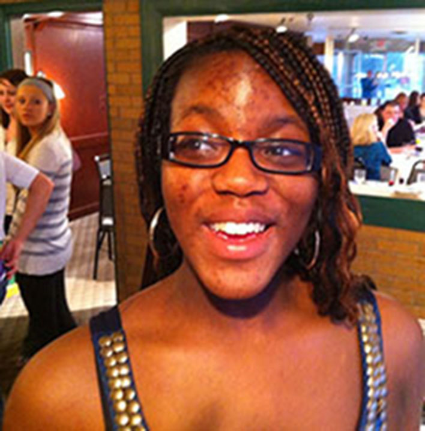

About Me

Hello! My name is Ogechi Ike.
I am a results-driven designer with over two years of experience in Web Design, Front-End Development, and UI Design. I enjoy self-reflection and meditation especially when I am traveling. Traveling lets me get out of my own little world and care more about the one that is inhabited by 7,000,000,000+ people.
When I am not designing, you can find me: reading, sketching, watching videos on the Internet, cooking, baking, walking, listening to podcasts (Code Newbie, Syntax FM, Jesus and Jollof, and Behind the Bastards) and looking up places I want to visit.
When I get a design project, I relish the challenge of creating something new while putting some of my own personality into the mix. Furthermore, understanding the user is king when dealing with clients and I always like to ask questions and sharing a story so that I can better understand their problem.